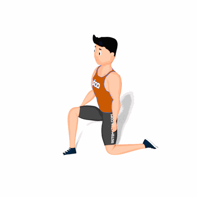

Alongamento Sentado de Glúteo

Exercício de alongamento para o glúteo, preparando para a atividade física.
Ficha Técnica
Tipo: Alongamento
Grupo Muscular: Glúteo
Aparelho: Nenhum
Músculos: Nenhum
Como realizar
- Sente-se no chão;
- Estique uma das pernas para trás, apoiando-a no solo e posicione a outra perna a frente, flexionada e apoiada ao solo;
- Incline o tronco a frente e mantenha esta posição pelo tempo previamente estipulado pelo professor(a).